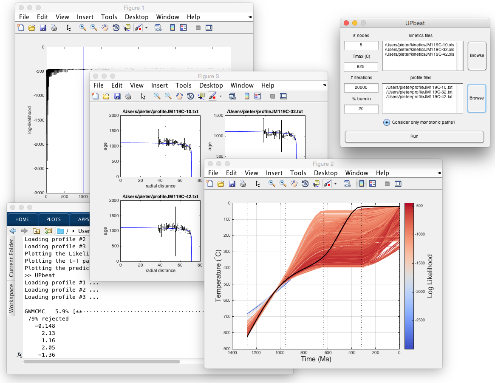

<html>
<script src="../run_prettify.js"></script>
<script src="../lang-r.js"></script>
<title>
UPbeat
</title>
  <link href="../mystyle.css" rel="stylesheet" type="text/css"/> 
</html>
<body>
<div class="main">
<center>
<h2>UPbeat (featuring the "MCMC Hammer")<br>thermochronology by U-Pb depth profiling</h2>
</center>

<!--
<p></p>
<a href="../papers/VermeeschChemGeol2013" style="text-decoration:none;">
<div style="border:1px solid black;">
Vermeesch, P., 2013, Multi-sample comparison of detrital age distributions. 
Chemical Geology, v.341, 140-146. doi:10.1016/j.chemgeo.2013.01.010.</div>
</a>
-->

<tt>UPbeat</tt> is a user-friendly MATLAB GUI that estimates
continuous time-temperature paths from U-Pb depth profiles of
accessory minerals such as rutile and apatite. The program uses a
Markov Chain Monte Carlo (MCMC) algorithm based on <a
href="https://github.com/grinsted/gwmcmc">Aslak Grindsted</a>'s
implementation of the <a
href="https://projecteuclid.org/euclid.camcos/1513731992">Goodman and
Weare</a> (2010) ensemble sampler (a.k.a. the "MCMC Hammer"; <a
href="http://iopscience.iop.org/article/10.1086/670067/meta">Foreman-Mackey</a>
<i>et al.</i>, 2013).

<p></p>

<div class="separator" style="clear: both; text-align: center;">
<a href="Screenshot.png" imageanchor="1" style="margin-left: 1em; margin-right: 1em;">
</a></div>
<br />
<table style="background-color: cyan; border-width: 0; margin-left: auto; margin-right: auto;">
<tbody>
<tr><td>Downloads:<br />

-&nbsp;<a href="http://ucl.ac.uk/~ucfbpve/software/UPbeat.zip">UPbeat.zip</a>
- the Matlab GUI.  To run this code, unzip the file into a directory
and enter <tt>UPbeat</tt> at the MATLAB command prompt.<br />

-&nbsp;<a href="http://ucl.ac.uk/~ucfbpve/software/data1.zip">data1.zip</a> - 
a (zipped) directory with a first example dataset, including three kinetic data files 
(in a <tt>.xls</tt> format) and  the corresponding three depth profiles (in a <tt>.txt</tt> format).<br />

-&nbsp;<a href="http://ucl.ac.uk/~ucfbpve/software/data2.zip">data2.zip</a> - 
a (zipped) directory with a second example dataset of four depth profiles.

</td></tr>
</tbody></table>

<script language="javascript" type="text/javascript">
var sc_project=2277130; 
var sc_invisible=1; 
var sc_partition=20; 
var sc_security="1b48b58b"; 
</script>

<script language="javascript" src="http://www.statcounter.com/counter/counter.js" type="text/javascript"></script>

<noscript><a href="http://www.statcounter.com/" target="_blank">
</a></noscript>

</body>
